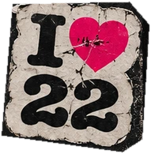
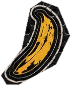
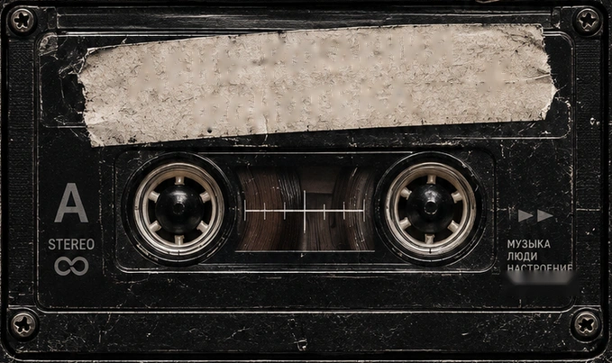
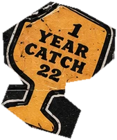

Первый год Catch 22
записан — пора
перевернуть пластинку!
23 октября отмечаем день рождения
и зовём друзей — вы в списке.
КОГДАСбор гостей — 20:00
ГДЕНаб. Фонтанки, 86




23 октября отмечаем день рождения
и зовём друзей — вы в списке.
КОГДАСбор гостей — 20:00
ГДЕНаб. Фонтанки, 86